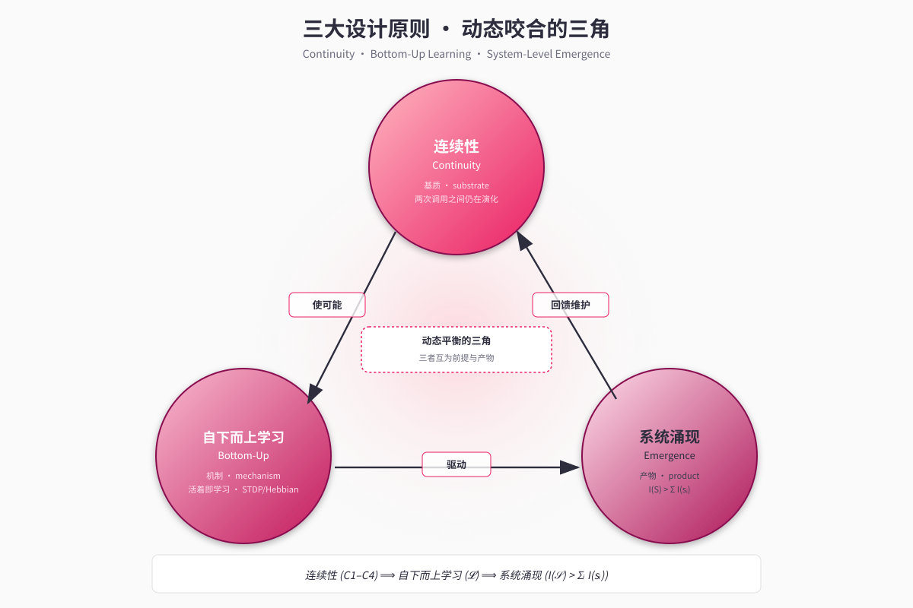

第 3 章 · 三大设计哲学¶
"我们不会写
if time_since_last_chat > 2_hours: mood = 'lonely'这样的代码。我们写的是：SNN 接收沉默时长 → 网络内部演化 → 社交驱动升高 → LLM 自然决定要找人聊天。这条因果链是从子系统协作中涌现的，没有人硬编码它。" — 《智能不是模型，而是系统》
3.1 第一原则：连续性（Continuity）¶
3.1.1 哲学动机¶
人类意识最本质的特征不是聪明、不是表达力、也不是工具使用——而是连续性。即便在最深的睡眠中，下丘脑仍在调节体温与心率；即便在沉默的几个小时里，关于一段对话的余韵仍在情绪里淡淡萦绕。"我"不是在被问问题的瞬间才存在，"我"是一条不间断的状态河流，在外部输入到达时把当下的形状交付给输入。
把这个直觉颠倒过来看现行的 LLM 应用范式，问题立刻清晰：所谓"AI 伙伴"在两次调用之间根本不存在；它存在的瞬间是被 prompt 重新组装出来的一个截面，而不是一条河流。我们因此把"连续性"作为系统的第一原则，而不是某个可选特性。
3.1.2 形式化定义¶
记 \(\mathbf{s}(t) \in \mathcal{S}\) 为系统在时刻 \(t\) 的内在状态，\(\mathcal{T}_{\text{call}}\) 为系统被外部输入触发 LLM 推理的离散时刻集合。我们说一个系统满足连续性原则当且仅当：
（*) "单调相关"在此放宽为：在不存在外界扰动的纯衰减/回归动力学下严格单调；在有刺激情形下相关方向可能反转，但变化幅度仍随时间增长。
C1 排除"系统空白"；C2 强制系统在调用之间仍有状态演化；C3 要求时间的流逝确实对状态产生可度量影响；C4 要求重启不是重生。我们将在后续章节中——尤其是第 5 章（SNN）、第 6 章（调质）、第 9 章（持久化）——逐条论证这四条不变式在 Neo-MoFox 中的兑现。
3.1.3 工程含义¶
C1–C4 立刻给出强约束：
- 必须存在某种独立运行频率的子系统（否则 C2 不成立）。Neo-MoFox 通过 30 秒心跳 + 10 秒 SNN tick 满足之。
- 必须有多时间尺度的状态变量（否则在长时间无外部输入时 C3 退化为"任何变化都已被遗忘"）。Neo-MoFox 通过 SNN（秒）/调质（分时）/习惯（天）三级耦合满足之。
- 必须有完整状态序列化协议（否则 C4 不成立）。Neo-MoFox 通过
life_engine_context.json的原子写入与重启加载满足之（见第 9 章）。
这一原则也解释了为什么把"连续性"挂在 prompt 上是徒劳的：prompt 是一段在调用瞬间被构造的字符串，它无法满足 C2——在两次调用之间，这段字符串本身并不存在，更谈不上演化。
3.2 第二原则：自下而上的学习（Bottom-Up Learning）¶
3.2.1 哲学动机¶
第二原则是对当代 AI 的一个更激进的诊断。主流范式把"学习"与"运行"切成两段：先用海量数据离线训练，然后冻结权重部署。无论这个范式有多成功，它在哲学上把 AI 与 活物 划清了界限——活物不分训练与部署，活物活着即在学习。
我们把这一直觉提炼为：
"活着"本身就是学习。 不是先有学习再有生存，而是生存的过程本身就是学习的过程。
实现这一立场，需要把外部梯度从学习的核心位置上移开，代之以局部、时序、在线的可塑性机制。
3.2.2 形式化框架¶
设系统中存在一组可塑参数 \(\boldsymbol{\theta}(t)\)（如 SNN 突触权重、记忆边权重、习惯 streak）。我们说该系统满足自下而上学习原则当且仅当存在一个学习算子 \(\mathcal{L}\) 使得：
其中 \(\mathcal{N}_{\text{local}}(t)\) 仅依赖于 \(t\) 时刻的局部信息（前后突触活动度、节点访问序列、近期事件统计），不依赖任何全局损失函数 \(L\) 的反向传播信号。
这个约束直接排除了梯度下降，但不排除局部的奖赏调制——脉冲时序依赖可塑性 (STDP)、Hebbian 规则、神经调质门控的强化等都满足这一形式。
3.2.3 与反向传播的关系¶
我们并不主张反向传播是"错的"——LLM 本身就是反向传播的产物。但反向传播解决的是"如何从大数据中归纳出强表示"这一问题；它解决不了"如何让一个已部署系统在新交互中持续生长"这一问题。
Neo-MoFox 的解法是把两类学习分层： - LLM 作为皮层，承载慢轴学习的成果（预训练 + 偶尔微调）； - SNN + 调质 + 记忆图作为皮层下，承载快轴学习的过程（在线 STDP、Hebbian 边强化、习惯 streak 演化）。
这种分层让我们既享有 LLM 的强表达力，又获得"系统在交互中真正生长"的能力。它的工程化将在第 5 章（SNN 软 STDP）、第 6 章（调质对 SNN 学习的门控）、第 7 章（记忆边的 Hebbian 强化）中分别落实。
3.2.4 一个反例：规则伪学习¶
需要警惕的是一类伪学习：用 if-else 规则维护的状态机，看起来在"学习"，实则只是按预定义条件改变变量值。例如：
这并不满足自下而上学习原则——它的"规则"本身是作者离线写好的全局逻辑，等价于一个被外部知识硬编码的隐式损失函数。Neo-MoFox 的设计史中（见第 13 章 §13.1），早期 drives/rules.py 等模块正属于此类伪学习的遗留；后续的 SNN 化重构正是要把这些伪学习替换为真正的局部可塑性。
3.3 第三原则：系统涌现智能（System-Level Emergence）¶
3.3.1 哲学动机¶
第三原则是对"模型即智能"信仰的直接抗辩。我们的核心立场是：
智能是异质子系统协作的过程性产物，而不是单一模型的属性。
这一立场有强烈的神经科学基础：人类的"决策"不是大脑皮层的独白——杏仁核给情绪标签、基底神经节做行为选择、下丘脑设定稳态、小脑校准时序、丘脑做信息门控、皮层做高级整合。砍掉任何一块，系统都不再"聪明"——但你也无法指着任何一块说"智能就在这里"。
LLM 在我们的系统中扮演的是皮层的角色：极其强大的整合器与表达器。但只有皮层不是大脑。Neo-MoFox 的工程努力，正是在 LLM 之外把皮层下系统建出来。
3.3.2 形式化框架¶
设系统由 \(n\) 个子系统组成 \(\mathcal{S} = \{s_1, s_2, \dots, s_n\}\)，每个子系统的"智能贡献"由某个标量泛函 \(I(\cdot)\) 度量。我们说该系统满足系统涌现智能原则当且仅当：
且这一不等式不依赖任何单一 \(s_i\) 的边际占优。换言之，移除任意 \(s_i\) 都会显著降低 \(I(\mathcal{S})\)；任何 \(s_i\) 单独运行时 \(I(\{s_i\})\) 都很有限。
这一框架天然地把项目暴露在可证伪的位置：第 13 章会诚实地讨论我们目前对 \(I(\mathcal{S})\) 与 \(I(\{s_i\})\) 的度量手段还相当原始，长期消融研究仍待补全。
3.3.3 真涌现与伪涌现¶
第二原则中提到的伪学习反例，在涌现层面也有对应：
伪涌现（被禁用）：
这是把"涌现"用 if-else 模拟出来。真涌现（Neo-MoFox 的目标）：
SNN 接收"沉默时长"作为输入特征
→ 网络在 STDP 历史下产生 social_drive 升高
→ 调质层把 social_drive 转化为"社交欲"浓度上升
→ LLM 在 prompt 中读到"社交欲充盈"的状态描述
→ LLM 自然倾向于提议聊天
这条因果链中没有任何一处硬编码"沉默 → 孤独 → 找人"。每一步都是各自的本地动力学，链条整体的"想念"是从协作中生长出来的（Abstract/智能不是模型而是系统.md）。
我们承认伪涌现与真涌现在外部表现上短期内可能难以区分；区分它们需要看系统的反事实行为：替换一个子系统、注入一个非典型输入、跨长时间观察是否出现训练时未规定的模式。这正是第 11 章案例研究的目的。
3.4 三原则的相互关系¶
三条原则不是平行的口号，它们之间存在严密的逻辑闭环（见 Figure F3）：

Figure F3 · 三大设计原则逻辑闭环 - 连续性是基质（substrate）：没有连续性，就没有可被本地学习算子作用的"过程"。学习需要时间，时间需要连续。 - 自下而上学习是机制（mechanism）：在连续的过程中，局部可塑性把外部交互转化为系统结构的演化。学习是连续性流向涌现的桥梁。 - 系统涌现智能是产物（emergent product）：当多个连续运行、各自带本地可塑性的子系统耦合在一起，整体智能就在协作中浮现。涌现需要连续与学习同时存在。
形式上：
且这一蕴含链反向也成立：要让涌现持续被维护，子系统必须持续学习；要让学习持续发生，连续性必须被保持。三者构成一个动态平衡的三角。
3.5 三原则的可证伪性¶
我们并不把三大原则视作不可挑战的教条。事实上，它们都是可被实验证伪的工程命题：
| 原则 | 证伪方式 |
|---|---|
| 连续性 | 关闭 SNN tick 与心跳，让 decay_only 失活——若用户在 5min/30min/3h 行为差异消失，则连续性未被实现。 |
| 自下而上学习 | 冻结 SNN 权重与记忆边权重——若在 30 天交互中系统的"性格漂移"消失，则学习是真的；若不消失，说明性格漂移其实来自其他机制。 |
| 系统涌现 | 单独保留 LLM 而切除 SNN/调质/记忆图——若行为质量无显著退化，则涌现性未被建立。 |
我们已在配置中保留了这些"消融开关"（见附录 B），但目前尚缺乏长程实证（详见第 13 章 §13.2）。本报告把这一不足明确陈述出来，以避免把原则误读为已被证实的事实。
3.6 小结¶
本章把项目的三大哲学命题——连续性、自下而上学习、系统涌现智能——从修辞性陈述提升为可形式化、可证伪的工程约束，并指出它们之间不是平行的口号而是动态咬合的三角关系。从下一章开始，我们将沿着这一三角，逐层展开 Neo-MoFox 的具体实现：第 4 章给出系统总览，第 5–10 章逐一深入各子系统。